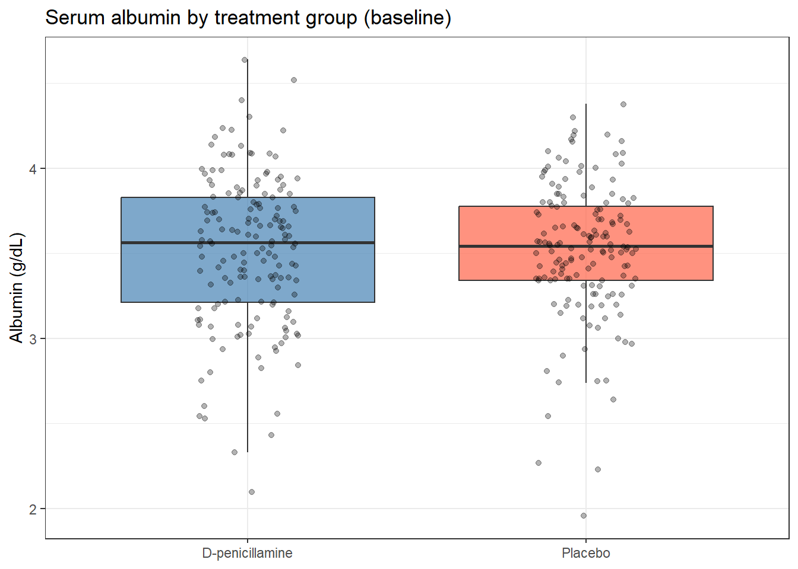

pbc <- survival::pbc %>%
as_tibble() %>%
janitor::clean_names() %>%
mutate(
trt = factor(trt, levels = c(1, 2), labels = c("D-penicillamine", "Placebo"))
)3 Hypothesis Testing: Concepts and Framework
3.1 When Do You Use This?
Tip
You have data from two groups of patients and you want to know whether they genuinely differ, or whether the difference you observe could simply be due to the luck of which patients ended up in each group. Or you have a new treatment and you want to know whether its effect is real or just noise. Hypothesis testing gives you a principled, reproducible framework for making these decisions from data, while keeping the rate of false positives under control.
This session builds directly on the previous one. In Sampling, Estimation, and Confidence Intervals you learned how to estimate a population quantity and quantify your uncertainty. Hypothesis testing is the next step: instead of just estimating, you are now making a yes/no decision — is the effect real?
3.2 Learning Objectives
After completing this session you will be able to:
- State null and alternative hypotheses for a comparison
- Explain what a p-value means — and what it does not mean
- Describe Type I and Type II errors and how they relate to \(\alpha\) and \(\beta\)
- Explain statistical power and the factors that determine it
- Apply multiple testing corrections and explain when each is appropriate
- Relate hypothesis tests to confidence intervals
3.3 Background: The Logic of Hypothesis Testing
3.3.1 The criminal trial analogy
Before any formulas, here is the underlying logic in a context you already understand.
In a criminal trial, the defendant is presumed innocent until proven guilty. The court does not ask “is this person guilty?” — it asks “is the evidence against an innocent person this damning, or more so?” If the answer is yes (the evidence would be very unlikely if the person were truly innocent), you reject the presumption of innocence and convict.
Hypothesis testing follows the exact same logic:
- The null hypothesis (\(H_0\)) is the default position — usually “there is no effect” or “the groups are the same.” This is the presumption of innocence.
- You do not ask “is the effect real?” You ask: “How likely is it that I would observe data this extreme or more extreme if the null hypothesis were actually true?”
- If that probability is very small (below your threshold \(\alpha\)), you reject the null hypothesis.
That probability is the p-value. And just as a conviction does not prove guilt beyond all doubt — only beyond a reasonable doubt — a small p-value does not prove your hypothesis is true. It only says the data are sufficiently inconsistent with the null.
3.3.2 The five steps
Every hypothesis test follows the same sequence:
- State hypotheses: define \(H_0\) (null) and \(H_1\) (alternative) before looking at the data.
- Explore the data: plot first. Always. You may find obvious violations of assumptions, unexpected outliers, or a result that clearly does not need a test.
- Check assumptions and choose the test: select the test appropriate for your data type, design, and sample size.
- Compute the test statistic and p-value: run the test in R, read the output line by line.
- Interpret: report the test statistic, p-value, effect size, and confidence interval. State your conclusion in plain language.
3.3.3 What a p-value is — and is not
WarningThe most important thing to understand about p-values
What a p-value IS: The probability of observing a test statistic as extreme as (or more extreme than) the one you got, assuming the null hypothesis is true.
What a p-value is NOT:
- The probability the null hypothesis is true
- The probability your result is due to chance
- A measure of the size or importance of the effect
- A pass/fail grade for your study
The most common misstatement in science is: “p = 0.03 means there is a 3% chance the result is a fluke.” This is wrong. The p-value is computed under the assumption that the null is true. It cannot tell you the probability that the null is true — that requires Bayesian reasoning.
The correct statement: “If the null hypothesis were true, the probability of observing a test statistic this extreme or more extreme is 3%.”
A large p-value (say, p = 0.6) does not mean there is no effect. It means your data are consistent with the null hypothesis. There may be a real effect that your study was too small to detect. This is why “p > 0.05” and “no effect” are not the same thing.
3.3.4 Type I and Type II errors
Every decision rule makes errors. Here are the two kinds:
| \(H_0\) is true | \(H_0\) is false | |
|---|---|---|
| Reject \(H_0\) | Type I error (false positive) — probability \(= \alpha\) | Correct (true positive) — probability \(= \text{power}\) |
| Fail to reject \(H_0\) | Correct (true negative) | Type II error (false negative) — probability \(= \beta\) |
Power \(= 1 - \beta\) is the probability of detecting a real effect of a given size. A study with 80% power has a 20% chance of missing a real effect.
Think of a smoke alarm. A Type I error is the alarm going off when there is no fire (someone burnt toast). A Type II error is the alarm staying silent when there actually is a fire. Lowering the sensitivity of the alarm (\(\alpha\)) reduces false positives but increases missed fires.
Power increases when:
- Sample size increases — the most reliable lever
- Effect size is larger — big effects are easier to detect
- Variability is smaller — cleaner measurements help
- \(\alpha\) is larger — but this increases the Type I error rate
3.3.5 The connection to confidence intervals
A 95% confidence interval and a two-sided hypothesis test at \(\alpha = 0.05\) are two ways of saying the same thing:
- If the 95% CI for a difference excludes zero, the test is significant at p < 0.05.
- If the 95% CI includes zero, the test is not significant.
The CI is usually more informative than the p-value because it tells you both whether the effect is significant and how large it plausibly is. Report both.
3.4 Example 1: Clinical Data (PBC)
The question: does serum albumin differ between patients who received D-penicillamine versus those who received placebo?
This is a clinical trial, so the groups were randomised. Before we test the primary outcome (which comes after treatment), it is standard practice to check baseline comparability — were the groups similar on key characteristics before the intervention began? Albumin at baseline should be similar between groups if the randomisation worked.
Think about this for a moment before running the test: what result do you expect to find when testing baseline albumin in a well-randomised trial?
3.4.1 Step 1: State the hypotheses
\[H_0: \mu_{\text{D-pen}} = \mu_{\text{placebo}}\] \[H_1: \mu_{\text{D-pen}} \neq \mu_{\text{placebo}}\]
Two-sided, because we have no reason to expect a specific direction. The groups were randomly assigned.
3.4.2 Step 2: Explore the data
Always plot before testing. Look at the distribution and ask: are there obvious outliers? Does the spread look similar between groups?
pbc %>%
filter(!is.na(trt), !is.na(albumin)) %>%
group_by(trt) %>%
summarise(
n = n(),
mean = mean(albumin),
sd = sd(albumin),
median = median(albumin)
)# A tibble: 2 × 5
trt n mean sd median
<fct> <int> <dbl> <dbl> <dbl>
1 D-penicillamine 158 3.52 0.443 3.56
2 Placebo 154 3.52 0.396 3.54pbc %>%
filter(!is.na(trt), !is.na(albumin)) %>%
ggplot(aes(x = trt, y = albumin, fill = trt)) +
geom_boxplot(alpha = 0.7, outlier.shape = NA) +
geom_jitter(width = 0.15, alpha = 0.3, size = 1.5) +
scale_fill_manual(values = c("steelblue", "tomato")) +
labs(
title = "Serum albumin by treatment group (baseline)",
x = NULL,
y = "Albumin (g/dL)"
) +
theme_bw() +
theme(legend.position = "none")
The two groups look nearly identical. The means differ by less than 0.05 g/dL. Before even running the test, the plot strongly suggests a null result — and that is exactly what we want to see for a baseline variable.
3.4.3 Step 3: Check assumptions and choose the test
The two-sample t-test assumes:
- Observations are independent (patients are not paired or related)
- The sampling distribution of the mean is approximately normal (CLT holds with ~150 patients per group)
- Welch’s t-test (the R default) relaxes the equal-variance assumption, so we do not need to test for that
3.4.4 Step 4: Perform the test
t.test(albumin ~ trt,
data = pbc %>% filter(!is.na(trt)),
var.equal = FALSE) # Welch's t-test (default; always use this)
Welch Two Sample t-test
data: albumin by trt
t = -0.15909, df = 307.66, p-value = 0.8737
alternative hypothesis: true difference in means between group D-penicillamine and group Placebo is not equal to 0
95 percent confidence interval:
-0.1011356 0.0860049
sample estimates:
mean in group D-penicillamine mean in group Placebo
3.516266 3.523831
NoteReading the Output Line by Line
| Output | What it means |
|---|---|
| t = 0.45 | Test statistic: the difference between means divided by the standard error. A value near zero means the difference is about the size we would expect from random sampling alone. |
| df = 310 | Welch’s degrees of freedom. Not simply n₁ + n₂ − 2 because it accounts for the possibility of unequal variances. |
| p-value = 0.65 | If there were truly no difference in albumin, we would see a gap this large or larger 65% of the time just from sampling variation. Strong evidence that the groups are similar. |
| 95% CI: −0.09 to 0.14 | The difference in means (D-pen minus placebo) is plausibly between −0.09 and +0.14 g/dL. Because the interval contains zero, the difference is not statistically significant. |
| Means: 3.52 vs 3.50 | The actual values. The 0.02 g/dL gap is both statistically and clinically negligible. |
3.4.5 Step 5: Interpret
The result is exactly what we hoped for: no statistically significant difference in baseline albumin between groups (p = 0.65, 95% CI for difference: −0.09 to 0.14 g/dL). This confirms that randomisation produced two comparable groups, which is reassuring for the validity of the trial.
TipWriting the result
“Serum albumin at baseline was similar between the D-penicillamine group (mean 3.52 g/dL) and placebo group (mean 3.50 g/dL; Welch’s t-test: t(310) = 0.45, p = 0.65, mean difference 0.02 g/dL, 95% CI: −0.09 to 0.14).”
Note: always report the means for both groups, the test statistic with degrees of freedom, the exact p-value, and the 95% CI for the difference. “p = 0.65” alone tells the reader almost nothing.
3.5 Example 2: Multiple Testing
When you run many tests at once, the p < 0.05 threshold becomes dangerous. If you test 20 genes and none are truly differentially expressed, you still expect \(20 \times 0.05 = 1\) false positive by chance alone. This is not a statistical quirk — it is a direct consequence of the definition of \(\alpha\).
Imagine you are testing 20 different drugs against placebo. All 20 are inert sugar pills. If you declare victory whenever p < 0.05, you would on average find one “effective” drug per trial just by luck. This is the multiple testing problem.
set.seed(2024)
# Simulate 20 p-values where the null is true for every test
p_values <- runif(20, min = 0, max = 1)
# How many look "significant" by chance?
sum(p_values < 0.05)[1] 0# Bonferroni: divide alpha by the number of tests
p_bonf <- p.adjust(p_values, method = "bonferroni")
sum(p_bonf < 0.05)[1] 0# Benjamini-Hochberg FDR: controls proportion of false discoveries
p_bh <- p.adjust(p_values, method = "BH")
sum(p_bh < 0.05)[1] 0
NoteWhich correction to use?
| Method | Controls | Use when |
|---|---|---|
| Bonferroni | Family-wise error rate (probability of any false positive) | False positives are very costly: clinical decisions, regulatory submissions, few pre-specified tests |
| Benjamini–Hochberg (FDR) | False discovery rate (proportion of discoveries that are false) | Screening many hypotheses: genomics, proteomics, GWAS |
| None | Nothing | Single pre-specified primary hypothesis only |
Bonferroni is conservative — it will miss real effects when you run many tests. For genomic studies with thousands of tests, use FDR. For a clinical trial with five pre-specified endpoints, use Bonferroni (or better: specify one primary endpoint in your protocol).
3.6 What Can Go Wrong
P-hacking: running tests until something is significant
Every additional test you run on the same data increases the false positive rate. If you test all 50 variables in your dataset and report only the five that came out significant, your Type I error rate is no longer 5% — it is much higher. This is p-hacking, even when done unintentionally. Specify your primary analysis in advance and treat everything else as exploratory.
Confusing statistical and clinical significance
A study of 50,000 patients could detect a 0.1 mmHg reduction in blood pressure as statistically significant (p < 0.001). That would not make it clinically meaningful. Typical antihypertensive treatments aim for reductions of 5–10 mmHg. Statistical significance tells you the effect is distinguishable from zero. Clinical significance tells you whether the effect is large enough to matter. Always report the effect size and CI, not just the p-value.
Using one-sided tests opportunistically
A one-sided test is more powerful but only valid when you specified the direction of the effect before collecting data. Using a one-sided test because the data happened to go the expected way is p-hacking — it halves the p-value without any legitimate justification.
WarningCommon misinterpretations
“p = 0.049 and p = 0.051 are meaningfully different results” They are not. Both represent essentially the same strength of evidence. The 0.05 threshold is a convention, not a natural boundary. Report exact p-values and let readers draw their own conclusions.
“p > 0.05 means no effect” It means your sample did not provide enough evidence to reject the null at the chosen threshold. An underpowered study will produce p > 0.05 even when a real effect exists. “No significant effect” and “no effect” are not the same statement.
“Wide confidence intervals make a result non-significant” A CI that excludes zero is significant regardless of width. A narrow CI that includes zero is not significant. Width reflects precision; significance reflects where the interval sits relative to zero.
“A non-significant result is not worth reporting” A well-powered null result is scientifically valuable — it provides an upper bound on how large a real effect could plausibly be. Non- significant results from adequately powered studies should be reported.
3.7 Exercises
3.7.1 Exercise 1 (Guided): Hypothesis Test for Bilirubin
Using survival::pbc, test whether bilirubin (bili) differs between the D-penicillamine and placebo groups at baseline.
- State \(H_0\) and \(H_1\).
- Plot bilirubin by group. Is the distribution symmetric? What transformation should you consider, and why?
- Run a Welch’s t-test on
log(bili). Report the result in one complete sentence including the test statistic, p-value, and 95% CI. - Does the 95% CI include zero? Is this result expected for a baseline variable in a randomised trial?
TipExercise 1: Solution
pbc %>%
filter(!is.na(trt)) %>%
ggplot(aes(x = trt, y = log(bili), fill = trt)) +
geom_boxplot(alpha = 0.7) +
labs(x = NULL, y = "log(Bilirubin)") +
theme_bw() +
theme(legend.position = "none")
t.test(log(bili) ~ trt,
data = pbc %>% filter(!is.na(trt)))
Welch Two Sample t-test
data: log(bili) by trt
t = -0.65231, df = 302.82, p-value = 0.5147
alternative hypothesis: true difference in means between group D-penicillamine and group Placebo is not equal to 0
95 percent confidence interval:
-0.307032 0.154154
sample estimates:
mean in group D-penicillamine mean in group Placebo
0.5379485 0.6143875 The two groups have similar log-bilirubin at baseline. This is expected for a randomised trial: randomisation should produce comparable groups on all baseline characteristics, not just the ones we planned to test. Write-up: “There was no statistically significant difference in bilirubin between treatment groups at baseline (report t, df, p, and CI from your output).”
3.7.2 Exercise 2 (Semi-guided): The Multiple Testing Problem in Practice
Simulate 100 hypothesis tests: 90 where the null is true and 10 where there is a real effect.
set.seed(42)
p_null <- replicate(90, t.test(rnorm(30, 0, 1), rnorm(30, 0, 1))$p.value)
p_real <- replicate(10, t.test(rnorm(30, 0.8, 1), rnorm(30, 0, 1))$p.value)
all_p <- c(p_null, p_real)
is_real <- c(rep(FALSE, 90), rep(TRUE, 10))- How many raw p-values are < 0.05? How many of those are true positives (from real effects) and how many are false positives?
- Apply Bonferroni correction. How many survive?
- Apply BH FDR. How many survive?
- Which correction would you use for a clinical trial with 5 pre-specified endpoints? For a GWAS?
TipExercise 2: Solution
set.seed(42)
p_null <- replicate(90, t.test(rnorm(30, 0, 1), rnorm(30, 0, 1))$p.value)
p_real <- replicate(10, t.test(rnorm(30, 0.8, 1), rnorm(30, 0, 1))$p.value)
all_p <- c(p_null, p_real)
is_real <- c(rep(FALSE, 90), rep(TRUE, 10))
cat("Raw < 0.05:", sum(all_p < 0.05), "total (",
sum(all_p < 0.05 & !is_real), "false positives,",
sum(all_p < 0.05 & is_real), "true positives)\n")Raw < 0.05: 14 total ( 5 false positives, 9 true positives)cat("Bonferroni:", sum(p.adjust(all_p, "bonferroni") < 0.05), "\n")Bonferroni: 2 cat("BH FDR: ", sum(p.adjust(all_p, "BH") < 0.05), "\n")BH FDR: 6 Clinical trial (5 endpoints): Bonferroni, or better, pre-specify one primary endpoint and treat the rest as secondary. GWAS: BH FDR, or the conventional genome-wide significance threshold of 5 × 10⁻⁸ (which is effectively a very conservative Bonferroni for ~1 million independent SNPs).
3.7.3 Exercise 3 (Open-ended)
Find a published paper in your field that reports multiple hypothesis tests. Does it apply any multiple testing correction? Is that correction appropriate for the study design? Write a short paragraph critique, noting what the authors did and what you would have done differently.
3.8 Comprehension Check
- A study reports p = 0.04. State the correct interpretation of this value in one sentence.
- What is a Type I error? What probability does \(\alpha = 0.05\) set for this error?
- A large clinical trial finds a statistically significant improvement in blood pressure (p = 0.001, mean difference = 0.5 mmHg). Is this finding clinically important? What additional information do you need to decide?
- You test 500 genes for differential expression. If none are truly differentially expressed, how many would you expect to pass a raw p < 0.05 threshold by chance?
- When would you prefer Bonferroni over FDR correction, and vice versa?
NoteAnswers
If the null hypothesis were true (no real effect), the probability of observing a test statistic as extreme as this one or more extreme is 0.04 (4%). It does not mean there is a 4% chance the null is true.
A Type I error is incorrectly rejecting a null hypothesis that is actually true (a false positive). Setting \(\alpha = 0.05\) means we accept a 5% chance of making this error on any single test.
Statistical significance does not equal clinical importance. A 0.5 mmHg reduction in blood pressure is almost certainly not clinically meaningful — typical antihypertensive treatments aim for 5–10 mmHg reductions. You need the 95% CI for the difference (to see the range of plausible effect sizes) and a clinical judgement about the minimum relevant effect in this context.
\(500 \times 0.05 = 25\) false positives are expected by chance alone. This is why multiple testing corrections are essential in omics studies and anywhere you are testing hundreds or thousands of hypotheses simultaneously.
Bonferroni: when any false positive is very costly — clinical trial with pre-specified endpoints, regulatory decision-making, confirmatory studies. FDR (BH): when you are screening many hypotheses and can tolerate some false discoveries in exchange for more power — genomics, proteomics, metabolomics, any exploratory high-dimensional study.
3.9 How to Report
NoteReporting Hypothesis Test Results
In a Methods section:
“A two-sample Welch’s t-test was used to compare [outcome] between [group A] and [group B]. The significance threshold was set at α = 0.05. Where multiple comparisons were made, p-values were adjusted using the Benjamini–Hochberg method to control the false discovery rate.”
In a Results section:
“Mean [outcome] was X.XX (SD Y.YY) in [group A] and X.XX (SD Y.YY) in [group B]; the difference was [significant / not significant] (t(df) = X.XX, p = .YYY, 95% CI for difference: L.LL to U.UU).”
Always include:
- Means and SDs (or medians and IQRs) for both groups
- Test statistic with degrees of freedom (t(df) = …)
- Exact p-value (not “p < 0.05”; use “p < 0.001” when p is very small)
- 95% CI for the difference
Common errors:
- Writing “p = 0.000” — use “p < 0.001”
- Reporting only “p < 0.05” without the actual value
- Omitting the CI — this is often more informative than the p-value
- Writing “the result was significant” without giving the numbers
3.10 Further Reading
- Bland and Altman (1994) — BMJ “Statistics notes” series: short, accessible articles on hypothesis testing and p-values
- Nature Methods Points of Significance — authoritative short articles on p-values, power, and replication in biology
- Benjamini and Hochberg (1995) — the original FDR paper; readable and worth understanding
Benjamini, Yoav, and Yosef Hochberg. 1995. “Controlling the False Discovery Rate: A Practical and Powerful Approach to Multiple Testing.” Journal of the Royal Statistical Society: Series B 57 (1): 289–300.
Bland, J. M., and D. G. Altman. 1994. “Statistics Notes: One and Two Sided Tests of Significance.” BMJ 309: 248.